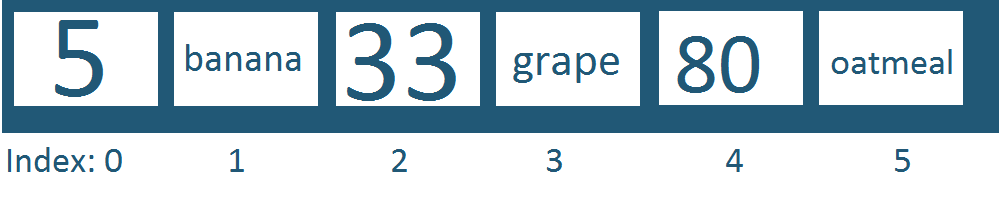

Ruby Arrays and Hashes
Understanding their strengths
Arrays are ordered collections that allow you to select objects along a consecutive numerical index. I like to imagine them like pieces of data sitting along a strip of numbered tape.
In my mind I imagine arrays to appear in an ever stretching horizontal table with the objects set on top of a row that's the index. They do not need to be the same data type. Now what makes array's different from hashes have to do with the indices's. They are not modifiable, so what we see "banana" associated with index 1 will always stay like that, unless some actions are done to sort and move around the array.
If you want to find something with an array, you will have to know it's location along the index, or iterate through the array to find it.
Hashes are also ordered collections, but each value in a hash is associated with a key. You retrieve a value by means of a key. Like the image above, you will see that a value is associated with a specific key (all of these are currently strings.). You always need a pair, so this may prove as difficulty in making a hash if you are lacking enough things to assign. In that case an array is a better option.
Here we see the two examples I have typed into my text editor. I am showing you what will print for when the same methods are run on the array and hash.
When I run it in my terminal, the array is associated with an index and it has something to print for the variable key, but nothing for the variable value. The hash actually contains all three.
Takeaways
Through practice and experience, one will find a feel for hashes and arrays.